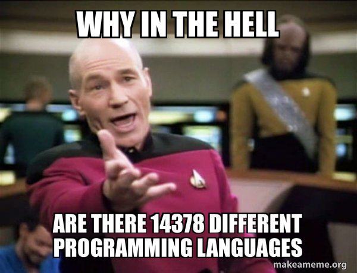

GVSU CIS 343
Introduction
- Office Hours
- If the door is open, feel free to come in and ask questions
- I like mouthy students
- Feel free to have fun (within reason)
- Don’t hesitate to declare a (non-course) subject “off limits”. No need to explain.
- Any recent edition of the textbook is fine. (11th edition can be found cheaply online)
- If you can’t program “fluently”, the course will be very difficult
-
GitHub accounts
- Ice Breaker
Activity #1
- Show Connect 4 and explain rules
- The fundamental algorithm in this game is looking at a row of numbers
and determining if there are 4 (more generally x in a row).
- write that algorithm in C.
- How can we apply that algorithm to all four directions on the board without re-writing the algorithm?
- How can we avoid copying the matrix into an array to apply algoritm?
- Add functions to access element of the array e.g., get_x_inColumn(int x, int col_num, board_t board), get_x_inDiagonal(int x, int diag_num, board_t board)
- Use function pointers
- Does C make this abstraction easy or hard? Why?
- The answer to that helps motivate the study of programming languages.
Why Study Programming Languages?
- Why are there so many programming languages?
- 
- Good Reasons
- Right tool for the job
- Better ways of expressing ideas
- Object-oriented
- First-class functions (i.e., lambdas)
- Better implementation ideas
- e.g., int size in Java is not implementation dependent
- Improvements in technology provide cost-efficient implementations for better ideas
- What are some programming language features that are common now, but were
uncommon years ago because they were too “expensive”?
- Garbage collection
- closures
- bytecode / MSIL / virtual machines
- type inference
- What are some programming language features that are common now, but were
uncommon years ago because they were too “expensive”?
- Bad Reasons for the multitude of programming languages
- Proprietary interests, commercial advantage
- Attempt to drive consumers toward specific products
- Free “clones” of a proprietary language.
- Backward compatibility limits improvements
- Java and C++’s attempts at adding lambdas
- Are these issues always bad? After all, it is how we got C#. Could we have transformed Java into a language as good as C#, or did we simply need to start from scratch?
- Other reasons
- Tradeoff between ease of use an efficiency
- Assembly vs python
- Some people write languages for “fun”
- Tradeoff between ease of use an efficiency
- What makes languages successful? (Both good and bad reasons)
- easy to learn (BASIC, Pascal, LOGO, Scheme, Python)
- easy to express things, easy use once fluent, “powerful”
- (C, Common Lisp, APL, Algol-68, Ruby)
- easy to implement (BASIC, Forth)
- possible to compile to very good (fast/small) code
- (C, Fortran)
- “Cheap:” wide dissemination at minimal cost
- (most languages today))
- Backing of a powerful sponsor
- (COBOL, PL/1, Ada, Visual Basic, C#)
- Why study programming languages (Why study and not just learn?)
- Help you choose the right language (i.e., “tool”) for the job.
- Note: This is more than knowing a bunch of languages and choosing the one that “feels” the best. You should understand the fundamental properties of the language and how they support (or work against) the most challenging aspect of your project.
- Make it easier to learn new languages.
- Somebody fluent in French can almost read Spanish.
- Polish has similar grammar to Latin
- Knowing LISP helped me learn both Ruby and asynchronous JavaScript
- Help you choose the right language (i.e., “tool”) for the job.
- Knowing many languages provides some of these benefits, but studying languages provides more benefits
- A framework and vocabulary you can use to ask and reason about problems
- A means of asking others “what’s going on” rather than “what are the magic words to make my code work”
- Studying many languages help you make better use of the languages you already know.
- I learned a lot about how to write English well by studying German in High School.
- There are ways to use Ruby/Lisp programming techniques in Java, C++, and JavaScript. They are most easily learned by learning Ruby/Lisp but once learned can translate into many languages
- Learning how languages are implemented can help you make efficient choices in other languages
- C doesn’t have associative arrays (hash maps). How best to mimic this feature when needed? (e.g., does lack of garbage collection affect our decision)